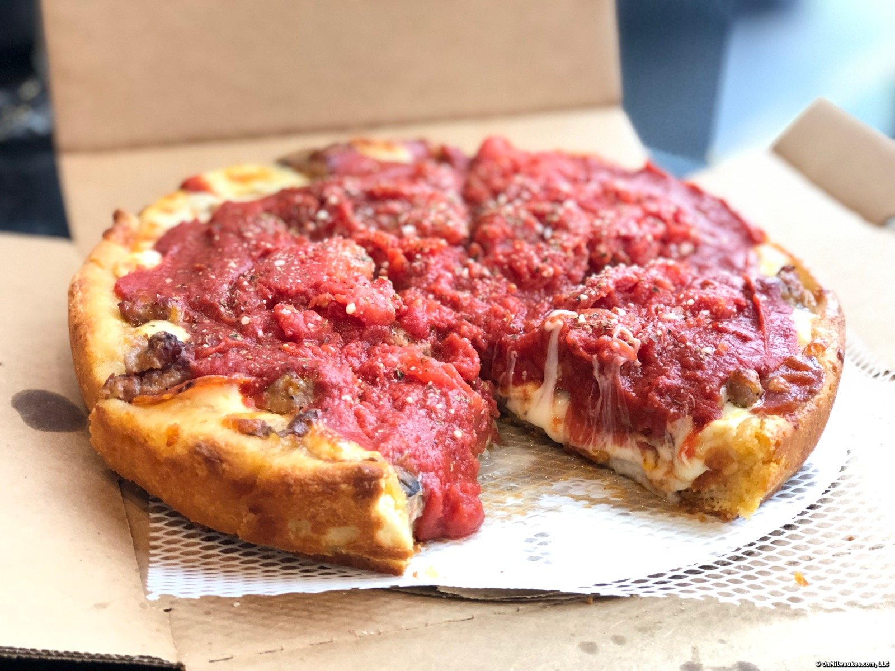

Chicago Deep Dish Pizza

Description
Did you ever wonder about the "pie" in pizza pie? This dish will make that connection clear for you. With its 1 1/2" tall crust cradling distinct layers of cheese, sausage, and tomatoes, this is definitely a knife-and-fork pizza PIE.
Ingredients
- 1 cup warm water
- 1 teaspoon fast acting yeast
- 1 cup olive oil
- 1.5 cup cornmeal
- 2 cups flour
- 4 ounces provolone
- 10 ounces mozzarella
- 12 ounces ground sausage
Steps
- Pour water into the bowl of a stand mixer fitted with a paddle attachment. Sprinkle in yeast and let dissolve, about 10 minutes. Add olive oil, melted butter, sugar, salt, cornmeal, and most of the flour. Knead, stopping to scrape down the sides occasionally and adding more flour as needed, until smooth and elastic.
- Transfer dough to a lightly floured work surface. Knead in extra flour if needed. Roll into a ball and place in a bowl greased with 1/2 teaspoon olive oil. Cover with a plate and let rise in a warm spot until doubled in volume, 1 to 2 hours.
- Meanwhile, let pizza sauce simmer in a pot over low heat until very thick, 60 to 90 minutes.
- Preheat the oven to 425 degrees F (220 degrees C).
- Poke dough to deflate and turn out onto your work surface. Press and stretch out dough into a round shape 3 to 4 inches larger than a 12-inch cast iron skillet. Brush skillet with 1 1/2 teaspoons olive oil. Place dough in the skillet; stretch and pull to evenly distribute it over the bottom and sides.
- Lay provolone cheese over the bottom of the crust. Scatter fresh mozzarella on top. Add Italian sausage and firm mozzarella. Ladle pizza sauce generously on top. Grate Parmesan cheese on top. Fold the edges of the crust in towards the center to seal in the sides. Drizzle crust and center with 1 tablespoon olive oil.
- Bake in the center of the preheated oven until crust sounds hollow and pizza is beautifully browned, about 35 minutes. Let rest for 10 minutes before slicing.